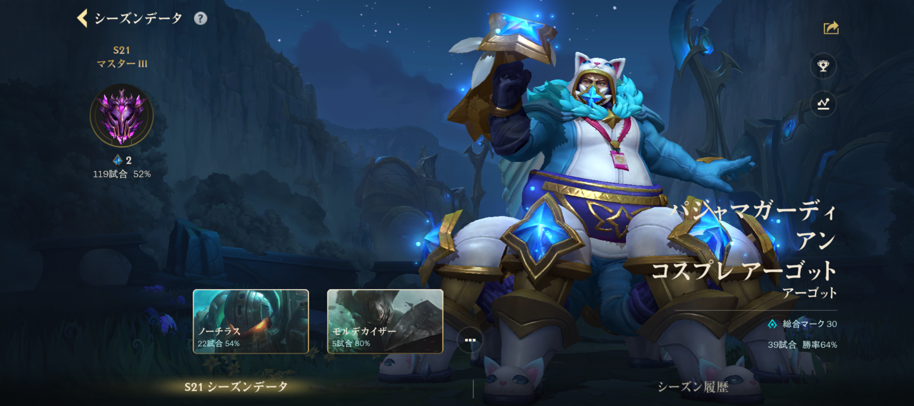

サイト概要
このサイトは、League of Legends Wild Rift のランク推移や使用チャンピオン、今後の目標をまとめるサイトです。 自分のプレイを振り返り、勝率や得意な役割を確認することで、より上達することを目的としています。
コンテンツ紹介
- ランク推移では、これまでのランクの変化を紹介します。
- チャンピオン成績では、よく使うチャンピオンをまとめます。
- 目標ランクでは、今後目指したいランクや改善点を書きます。
更新情報
更新日：2026年7月24日

このサイトは、League of Legends Wild Rift のランク推移や使用チャンピオン、今後の目標をまとめるサイトです。 自分のプレイを振り返り、勝率や得意な役割を確認することで、より上達することを目的としています。
更新日：2026年7月24日